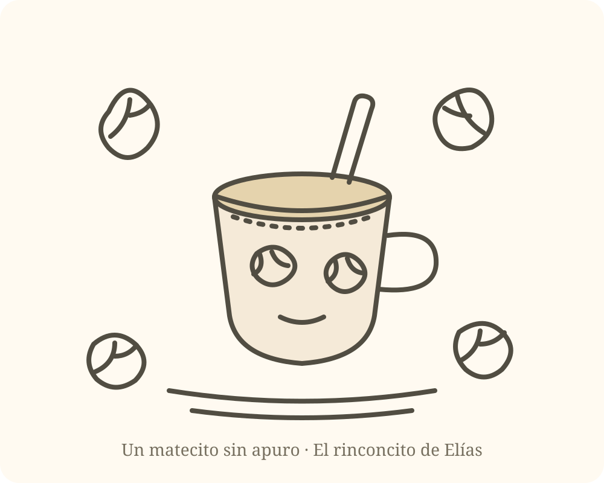
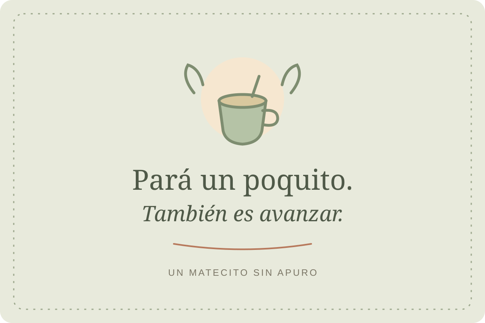
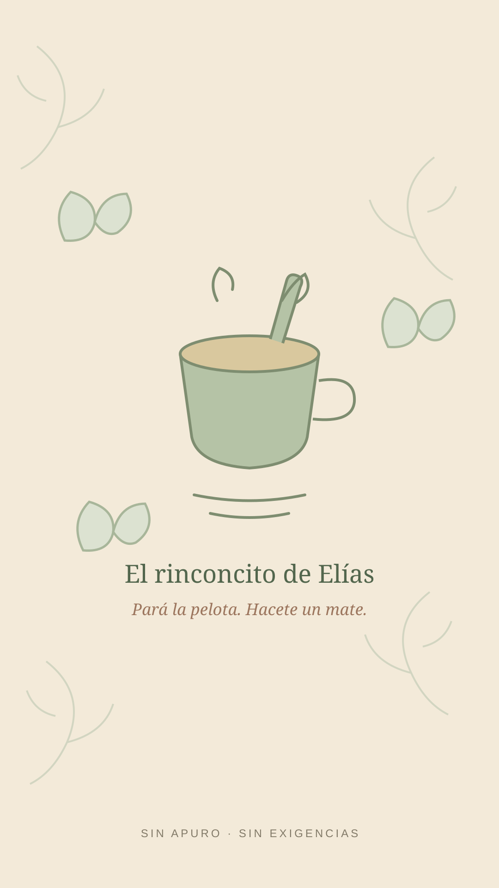

01 / LEER
Un cuentito de la ronda
El mate que esperaba
Ficción breve
Don Jacinto dejaba un mate junto a la ventana. No esperaba a nadie en particular; le gustaba pensar que todavía podía aparecer una charla.
La puerta está abierta
Este es mi rinconcito: un lugar para bajar un cambio, leer algo breve, aprender una curiosidad y llevarte alguna cosita linda. Entrá cuando quieras. No hace falta que yo esté del otro lado.
Pasar un ratitoQue el agua caliente y las apuradas esperen un poquito. — Elías
Una mesa sencilla, una pausa y tiempo para vos.
Bienvenido, bienvenida. Acá no hay que completar nada ni llegar a ningún lado. Elegí una cosita, quedate lo que quieras y seguí tu día cuando estés listo.
Lo que dejé sobre la mesa
Unas pocas cosas, hechas para abrirse con calma.
Un cuentito de la ronda
Ficción breve
Don Jacinto dejaba un mate junto a la ventana. No esperaba a nadie en particular; le gustaba pensar que todavía podía aparecer una charla.
Una curiosidad matera
La yerba mate se obtiene de las hojas de Ilex paraguariensis, un árbol nativo de Sudamérica.
Un consejito de la casa
Mientras se calienta el agua, aflojá los hombros. El mundo puede esperar lo que dura un mate.
Pequeños regalos digitales
Son gratuitos. Descargalos, guardalos o imprimilos en casa. No necesitás registrarte ni pedir permiso.

Para imprimir
Un dibujo sencillo para pintar con lápices o fibras.
Descargar dibujo
Para guardar o compartir
Una tarjetita con un recordatorio amable para un día largo.
Descargar tarjeta
Para tu dispositivo
Un fondo tranquilo para el celular o la computadora.
Descargar fondoLos dibujos son archivos SVG: se ven nítidos al imprimir y se pueden abrir en el navegador.
Una cajita al costado
Este rinconcito es libre y seguirá siendo libre. Si algo de lo que encontraste acá te hizo bien y querés ayudar a que siga creciendo, podés dejar una colaboración voluntaria. No hace falta, no hay monto esperado y no cambia lo que podés disfrutar.
Todavía no configuradoNo publicamos datos de pago inventados. Cuando el alias esté confirmado, esta cajita permitirá copiarlo con un toque.
Bueno, por hoy
Una idea, una sonrisa, un dibujo o simplemente cinco minutos tuyos. La puerta queda abierta para cuando quieras volver.
Volver a la mesa ↑